Главное окно редактора состоит из четырёх основных элементов, каждый из которых выполняет свою роль в процессе работы с текстом и языковым процессором.
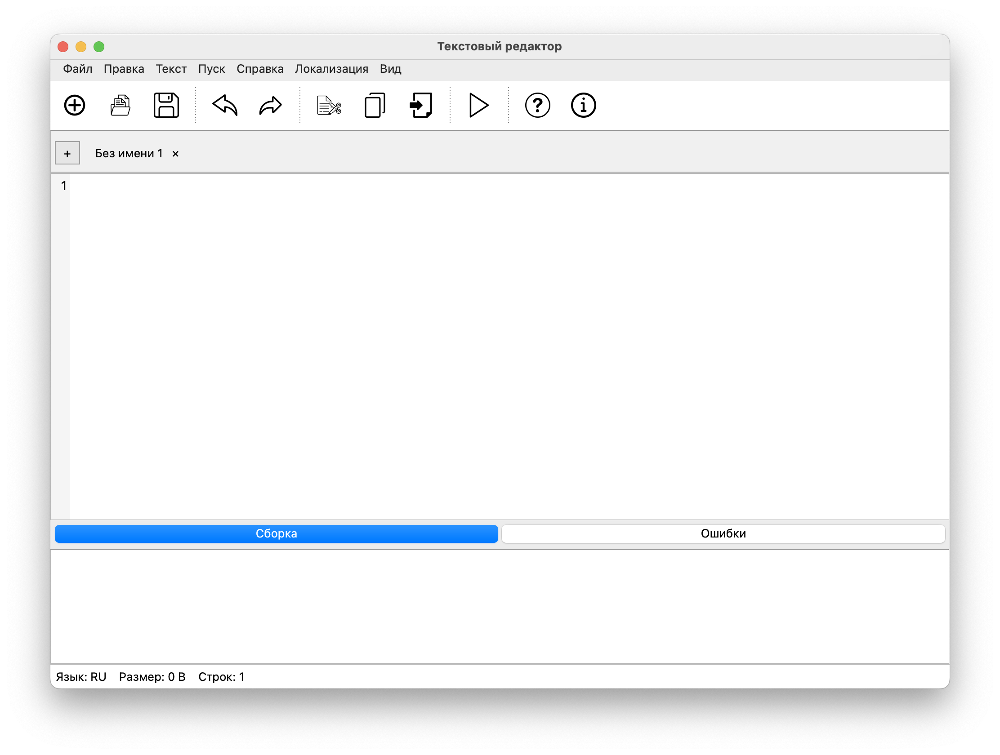
В верхней части окна расположено главное меню, включающее следующие разделы: Файл, Правка, Текст, Пуск и Справка.
В меню «Файл» доступны следующие функции:
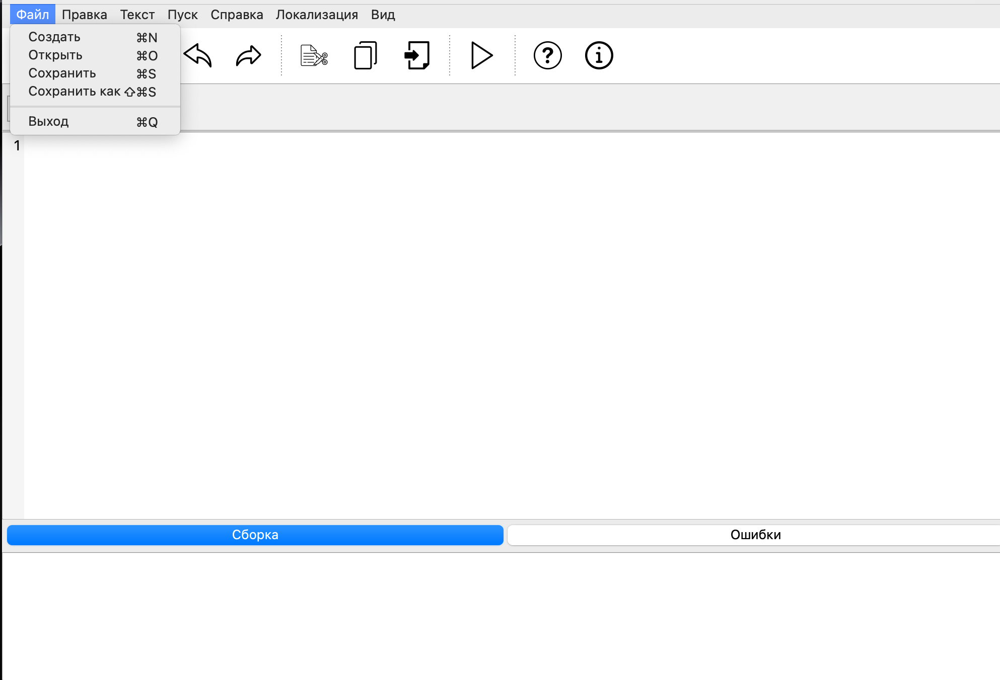
Меню «Правка» содержит инструменты для редактирования текста. Эти команды позволяют быстро изменять содержимое документа, управлять буфером обмена и выполнять базовые операции редактирования.
В меню доступны следующие функции:
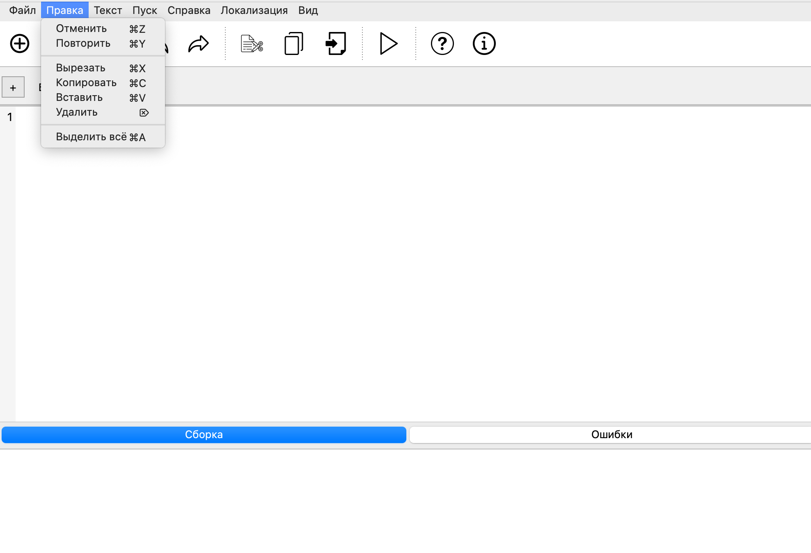
Меню «Текст» содержит команды, связанные с изучением, анализом и описанием грамматик, а также с демонстрацией примеров и вспомогательных материалов. Этот раздел используется для работы с теоретическими сведениями и примерами, необходимыми при изучении языковых процессоров.
В меню доступны следующие функции:
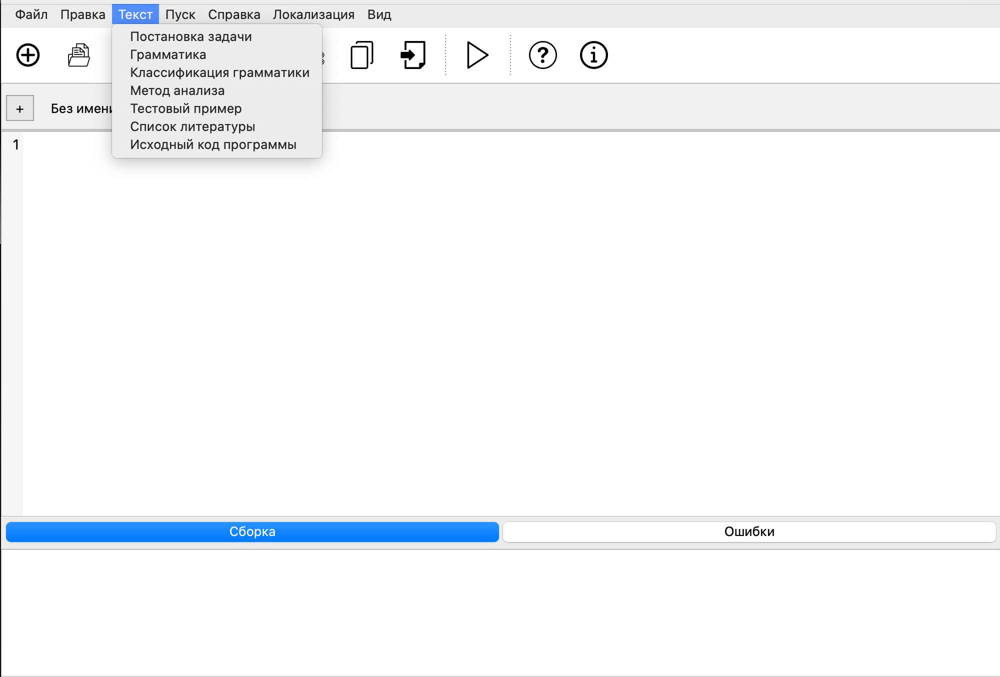
Меню «Пуск» используется для запуска работы языкового процессора. Здесь находятся команды, которые инициируют анализ текста, выполняют обработку грамматики и формируют результаты, отображаемые в нижней панели программы.
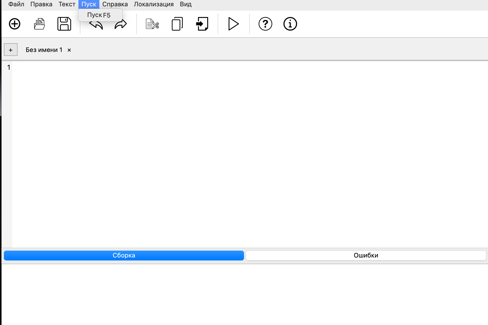
Меню «Справка» содержит информационные разделы, которые помогают пользователю ориентироваться в программе, изучать её возможности и получать сведения о разработчиках и версии приложения.
В меню доступны следующие функции:
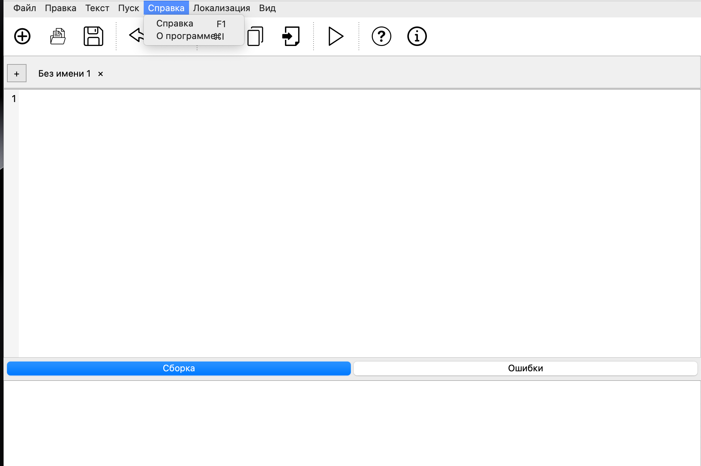
Меню «Локализация» позволяет выбрать язык интерфейса программы. Доступны два варианта: русский и английский. Переключение языка изменяет подписи меню, кнопок, сообщений и элементов интерфейса.
Выбор языка применяется мгновенно и не требует перезапуска программы.
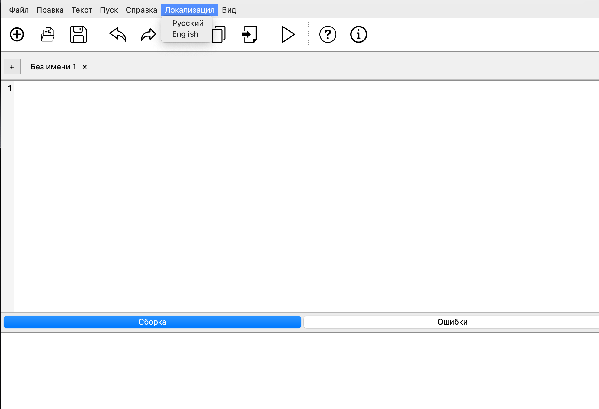
Меню «Вид» содержит настройки отображения интерфейса. Основная функция этого раздела — изменение размера шрифта в окне редактирования текста и в области вывода результатов.
Пользователь может выбрать один из заранее подготовленных размеров шрифта. Изменение применяется сразу и позволяет настроить удобный внешний вид редактора для работы с большими текстами или мелкими деталями.
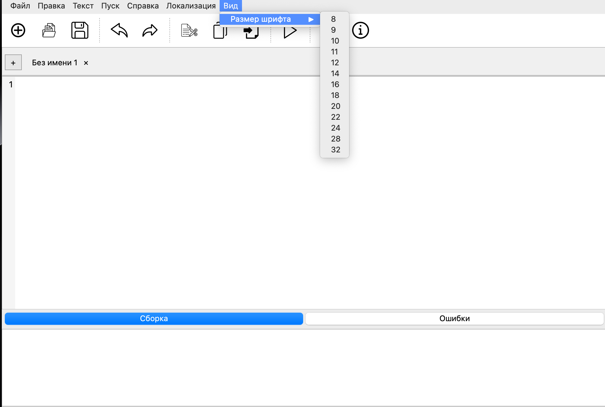
Программа поддерживает два языка интерфейса: русский и английский. Переключение языка выполняется через меню «Локализация». После выбора нужного варианта все элементы интерфейса — меню, кнопки, подсказки и сообщения — автоматически обновляются и отображаются на выбранном языке.
Ниже приведён пример того, как выглядит интерфейс программы после переключения языка на английский.
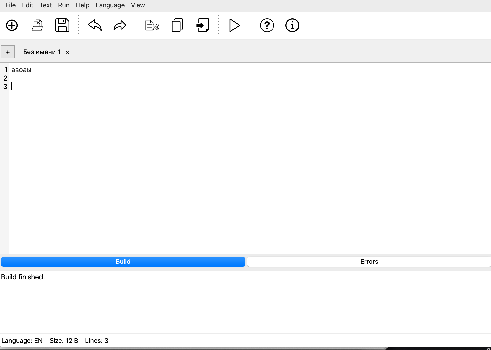
При сохранении документа программа открывает стандартное системное окно выбора файла. В нём пользователь может указать имя файла, выбрать папку для сохранения и подтвердить действие.
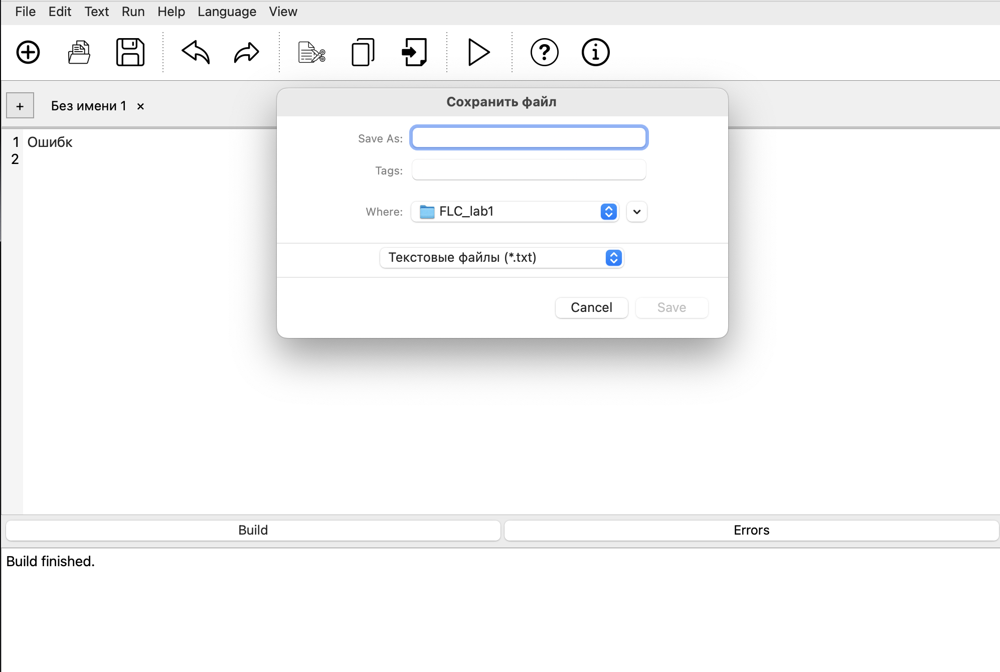
После выполнения анализа текста языковым процессором программа отображает результаты в нижней панели вывода. Если ошибок не обнаружено, выводится сообщение об успешной обработке входных данных. Это означает, что текст соответствует грамматике и может быть корректно разобран выбранным методом анализа.
В случае успешного запуска в области вывода отображается сообщение о завершении анализа и отсутствии ошибок.
Если в процессе анализа текста языковым процессором обнаружены ошибки, программа выводит подробную информацию о каждом нарушении грамматики. Сообщения об ошибках отображаются в нижней панели вывода и содержат сведения о типе ошибки, строке и позиции, где она была обнаружена.
Такой вывод помогает быстро найти проблемные места в тексте и исправить их. После внесения изменений пользователь может повторно запустить анализ, чтобы убедиться в корректности исправлений.
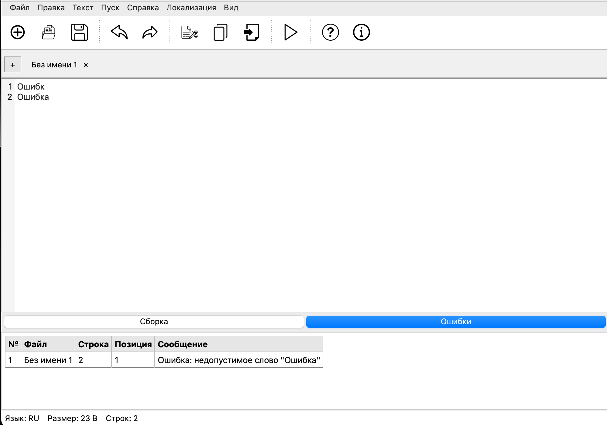